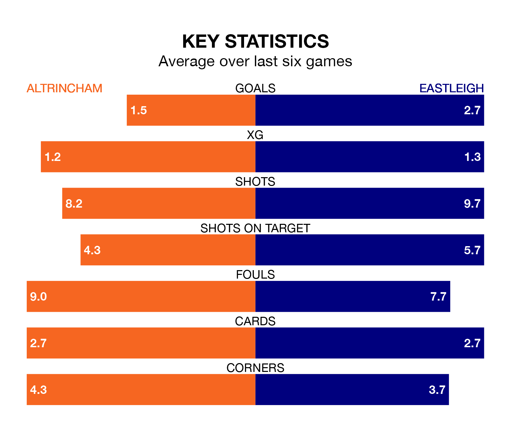

Altrincham are heavy favourites to keep all three points at home in Saturday's kick-off against Eastleigh.
Robins, who sit seventh in National League with 27 games played, are priced at 1.6 to seal victory at the J. Davidson Stadium.
Sitting five places and five points behind them in the table, Eastleigh are 5.0 to win with *Betting Company*, while the draw is at 3.9.
With 49 goals in 27 games so far this season, Altrincham are scoring more than average in the league with 1.8 goals per game. And they are conceding fewer than average, letting in 38 goals at a rate of 1.4 per game.
Eastleigh are also above average scorers, with 1.8 goals per game, compared to a league average of 1.5. They have conceded 1.9 goals per game.
In the last 10 years, Altrincham and Eastleigh have played each other on 11 occasions. Altrincham won three of them, Eastleigh four, and they drew four times.
On average, Robins scored 1.6 goals and the Spitfires 1.5 in those matches.
Their last meeting was on November 18, when Eastleigh won 2-1 at home.
Robins are in mixed form in National League, with two wins and two draws from their last six games.
And also with two wins and two draws over that period, the Spitfires's form is identical – they have both taken eight points from 18.
Altrincham's last match was on January 16, a 2-1 loss against Chesterfield, with Christopher Conn getting the goal for Robins.
Eastleigh drew 4-4 with Boreham Wood last time out, on Wednesday, with Enzio Boldewijn, Jake Taylor, Malachi Dotse and Paul Leon Miller McCallum on the scoresheet.
Updated: 08:51 (UTC), 25/01/24